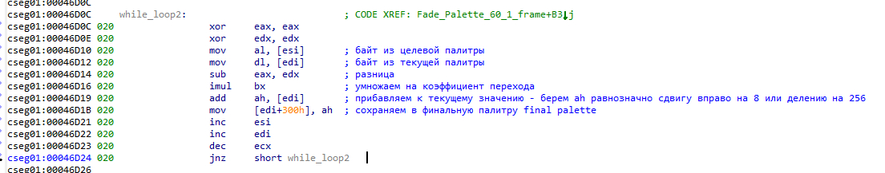

<!DOCTYPE html>
<html>
<head>
	<title>Приемы дизассемблирования кода в IDA</title>

	<meta name="DESCRIPTION" content="Приемы дизассемблирования кода в IDA">
	<meta name="KEYWORDS" content="Приемы дизассемблирования кода в IDA">

<style type="text/css">
body {
	font-size: 24px;
	font-family: "Consolas";
	background-color: #000;
	color: #ffffff;
}

pre {
	font-size: 24px;
	font-family: "Consolas";
	background-color: #ffffaa;
	color: #000;
	width: max-content;
	min-width: 100%;
}

div.my_selected {
	width: 100%;
	background-color: #ffff55;
	position: relative;
}

a:link, a:visited { color: #aaaaaa; text-decoration: none; font-weight: normal;} 
a:active, a:hover { color: #aaaaaa; text-decoration: underline;}

p {
	text-align: justify;
	margin-right: 20px;
}

</style>	
</head>
<body>

<h3>
Приемы дизассемблирования кода в IDA
</h3>

<pre>

.text:0040120D                 push    ecx
.text:0040120E                 fld     angle
.text:00401214                 fstp    [esp+280h+var_280]
.text:00401217                 call    _cosf
.text:0040121C                 add     esp, 4

</pre>

<p>
В этом куске кода может показаться неясным, зачем регистр ecx ложится в стек? Но тут все просто- это трюк компилятора. На месте ecx может быть любой другой регистр. Нам важно не то какой это регистр, а что в стеке, на вершине стека резервируется 4 байта для одной float переменной. Просто команда push ecx присутствует что бы в стеке зарезервировать место. Потом в это место- на вершину стека выгружается переменная angle (команда fstp) - как ясно угол. Затем вызывается функция C++ cosf() которая вычисляет косинус этого угла. И после вызова функции cosf() стек очищается на 4 байта, то есть push ecx зарезервировал 4 байта, а add esp,4 очищает (переносит указатель esp) стек на 4 байта.
</p>

<p>
Когда говориться что стек очищается на 4 байта - это не значит что, к примеру, эти 4 байта заполняются нулями, или чем то другим. Это можно подумать так как используется слово очищается. На самом деле под этим понятием- очистка стека, подразумевается что указатель esp переносится вверх по адресам на 4 байта. Так как стек растет от старших адресов к младшим (когда используется инструкция push) то есть адрес в esp уменьшается с ростом стека, то очистка стека подразумевает перенос значения esp вверх по адресам памяти.
</p>

Другой пример как в стек функции передаются значения. Ассемблерный код:

<pre>

.text:004017A6                 mov     [ebp+i], 0
.text:004017B0                 jmp     short loc_4017C1
.text:004017B2 ; ---------------------------------------------------------------------------
.text:004017B2
.text:004017B2 loc_4017B2:                             ; CODE XREF: Draw_Cube(void)+7C7j
.text:004017B2                 mov     eax, [ebp+i]
.text:004017B8                 add     eax, 1
.text:004017BB                 mov     [ebp+i], eax
.text:004017C1
.text:004017C1 loc_4017C1:                             ; CODE XREF: Draw_Cube(void)+5C0j
.text:004017C1                 cmp     [ebp+i], 8
.text:004017C8                 jge     loc_4019BC
.text:004017CE                 lea     eax, [ebp+mxRotateY]
.text:004017D1                 push    eax             ; m
.text:004017D2                 mov     ecx, [ebp+i]
.text:004017D8                 imul    ecx, 0Ch
.text:004017DB                 add     ecx, offset ?vert_buff@@3PAUvertex3@@A ; vertex3 * vert_buff
.text:004017E1                 sub     esp, 0Ch
.text:004017E4                 mov     edx, esp
.text:004017E6                 mov     eax, [ecx]
.text:004017E8                 mov     [edx], eax
.text:004017EA                 mov     eax, [ecx+4]
.text:004017ED                 mov     [edx+4], eax
.text:004017F0                 mov     ecx, [ecx+8]
.text:004017F3                 mov     [edx+8], ecx
.text:004017F6                 lea     edx, [ebp+var_1E4]
.text:004017FC                 push    edx             ; result
.text:004017FD                 call    ?Vec3_Mat4x4_Mul@@YA?AUvertex3@@U1@QAY03M@Z ; Vec3_Mat4x4_Mul(vertex3,float (* const)[4])
.text:00401802                 add     esp, 14h

</pre>

<p>
И код С++:
</p>

<pre>

	struct vertex3 {
		float x,y,z;
	};

	vertex3 vert_buff[8] = {
		-4.0, -4.0, -4.0,
 		4.0, -4.0, -4.0,
		-4.0,  4.0, -4.0,
 		4.0,  4.0, -4.0,

		-4.0, -4.0,  4.0,
 		4.0, -4.0,  4.0,
		-4.0,  4.0,  4.0,
 		4.0,  4.0,  4.0 };

	typedef float matrix4x4[4][4];

 	vertex3 Vec3_Mat4x4_Mul(vertex3 v, matrix4x4 m)
	{
		vertex3 t;

		t.x =	v.x * m[0][0] +
				v.y * m[1][0] +
				v.z * m[2][0] +
					m[3][0];

		t.y =	v.x * m[0][1] +
				v.y * m[1][1] +
				v.z * m[2][1] +
					m[3][1];

		t.z =	v.x * m[0][2] +
				v.y * m[1][2] +
				v.z * m[2][2] +
					m[3][2];

		return t;
	}


		static float angle = 0.0f;

		matrix4x4 mxRotateY = {
			cosf(angle),	0.0,	sinf(angle),	0.0,
			0.0,			1.0,	0.0,			0.0,
			-sinf(angle),	0.0,	cosf(angle),	0.0,
			0.0,			0.0,	0.0,			1.0 };


	for ( int i = 0; i &lt 8; i++ )
	{
		vertex3 v = Vec3_Mat4x4_Mul(vert_buff[i], mxRotateY);

</pre>

<p>
В ассемблерном коде:
</p>

<pre>

.text:004017E1                 sub     esp, 0Ch

</pre>

<p>
От вершины стека отнимаем 12 байт - это 3 значения float по 4 байта каждое, т.е. мы в стек заносим vert_buff[i] - текущую вершину, три значения типа float.
</p>

<pre>

.text:004017E1                 sub     esp, 0Ch
.text:004017E4                 mov     edx, esp
.text:004017E6                 mov     eax, [ecx]
.text:004017E8                 mov     [edx], eax
.text:004017EA                 mov     eax, [ecx+4]
.text:004017ED                 mov     [edx+4], eax
.text:004017F0                 mov     ecx, [ecx+8]
.text:004017F3                 mov     [edx+8], ecx

</pre>

<p>
Здес edx содержит значение вершины стека, значение edx увеличивается каждый раз на 4 байта, а регистр ecx содержит адрес на vert_buff[i] - т.е. текущую вершину - элементы x,y,z (три float значения). Таким образом в стек функции Vec3_Mat4x4_Mul() передаются аргументы без использования иструкции push. Здесь используется конструктор копирования, что бы положить данные в стек функции. Если в классе (структуре) не объявлен конструктор копирования, то используется конструктор копирования, который автоматически генерируется компилятором.
</p>

<p>
Из кода выше видно что массив vert_buff хранит вершины. К примеру первое значение это -4.0 типа float. Но в дизассемблере IDA этот массив vert_buff выглядит по другому- вот так:
</p>

<pre>
.data:00404000 ; struct vertex3 * vert_buff
.data:00404000 ?vert_buff@@3PAUvertex3@@A db 0         ; DATA XREF: Draw_Cube(void)+5EBo
.data:00404001                 db    0
.data:00404002                 db  80h ; A
.data:00404003                 db 0C0h ; L
.data:00404004                 db    0
.data:00404005                 db    0
.data:00404006                 db  80h ; A
.data:00404007                 db 0C0h ; L
.data:00404008                 db    0
.data:00404009                 db    0
.data:0040400A                 db  80h ; A
.data:0040400B                 db 0C0h ; L
.data:0040400C                 db    0
.data:0040400D                 db    0
.data:0040400E                 db  80h ; A
.data:0040400F                 db  40h ; @
.data:00404010                 db    0

</pre>

<p>
Эти значения хранятся во внутреннем представлении процессра float чисел. Что бы увидеть число -4.0 в начале массива vert_buff надо поставить курсор на начало массива vert_buff - это значение 00404000 - нажать комбинацию клавиш Alt + D и выбрать кнопку float.
</p>

<pre>

.data:00404000 ; struct vertex3 * vert_buff
.data:00404000 ?vert_buff@@3PAUvertex3@@A dd -4.0      ; DATA XREF: Draw_Cube(void)+5EBo
.data:00404004                 db    0
.data:00404005                 db    0
.data:00404006                 db  80h ; A
.data:00404007                 db 0C0h ; L
.data:00404008                 db    0
.data:00404009                 db    0
.data:0040400A                 db  80h ; A
.data:0040400B                 db 0C0h ; L
.data:0040400C                 db    0
.data:0040400D                 db    0
.data:0040400E                 db  80h ; A
.data:0040400F                 db  40h ; @
.data:00404010                 db    0
.data:00404011                 db    0
.data:00404012                 db  80h ; A
.data:00404013                 db 0C0h ; L


</pre>

<p>
В коде выше видно что после нажатия Alt + D мы видим значение -4.0 в начале массива vert_buff. 0xC0800000 это шестнадцатеричное представление числа -4.0 типа float.
</p>

<p>
Так же может встретиться следующий код:
</p>

<pre>

.text:0048EBCD                 mov     ecx, dword_4CEAC8
.text:0048EBD3                 mov     edx, dword_4CEACC
.text:0048EBD9                 mov     [ebp+var_4], eax
.text:0048EBDC                 mov     eax, dword_4CEAD0
.text:0048EBE1                 mov     [ebp+var_28], ecx
.text:0048EBE4                 mov     cl, byte_4CEAD4
.text:0048EBEA                 mov     [ebp+var_24], edx
.text:0048EBED                 mov     [ebp+var_20], eax
.text:0048EBF0                 mov     [ebp+var_1C], cl

</pre>

<p>
В сегменте данных программы переменные из кода выглядят так:
</p>

<pre>
.data:004CEAC8 dword_4CEAC8    dd 6E6F6E41h            ; DATA XREF: sub_48EBB0+1Dr
.data:004CEAC8                                         ; sub_497290+24r
.data:004CEACC dword_4CEACC    dd 756F6D79h            ; DATA XREF: sub_48EBB0+23r
.data:004CEACC                                         ; sub_497290+6r
.data:004CEAD0 dword_4CEAD0    dd 55504373h            ; DATA XREF: sub_48EBB0+2Cr
.data:004CEAD0                                         ; sub_497290+Cr
.data:004CEAD4 byte_4CEAD4     db 0                    ; DATA XREF: sub_48EBB0+34r
.data:004CEAD4                                         ; sub_497290+2Cr

</pre>

<p>
Это обыкновенная строка символов разбитая на три части, что бы ее увидеть нужно поставить курсор на адрес .data:004CEAC8 и нажать клавишу A, и мы увидим строку AnonymousCPU заканчивающуюся нулем:
</p>

<pre>

.data:004CEAC8 aAnonymouscpu   db 'AnonymousCPU',0     ; DATA XREF: sub_48EBB0+1Dr
.data:004CEAC8                                         ; sub_497290+24r ...

</pre>

<p>
Что бы обратно преобразовать строку в данные, необходимо поставить курсор на то же место, и нажать клавишу D.
</p>

<pre>

.data:004CEAC8 dword_4CEAC8    dd 6E6F6E41h            ; DATA XREF: sub_48EBB0+1Dr
.data:004CEAC8                                         ; sub_497290+24r
.data:004CEACC                 dd 756F6D79h            ; DATA XREF: sub_48EBB0+23r
.data:004CEACC                                         ; sub_497290+6r
.data:004CEAD0                 dd 55504373h            ; DATA XREF: sub_48EBB0+2Cr
.data:004CEAD0                                         ; sub_497290+Cr
.data:004CEAD4                 db    0                 ; DATA XREF: sub_48EBB0+34r
.data:004CEAD4                                         ; sub_497290+2Cr

</pre>

<p>
Так же при дизасемблировании программ с использованием классов на С++, перед вызовом функции класса через регистр ecx передается указатель this, как в примере ниже. Программа на С++:
</p>

<pre>

class A
{
public:
	A(){};
	~A(){};

	int a;

	int func(int val)
	{
		return a + val;
	}
};

int main(void)
{
	
	A obj;
	obj.a = 0x33;

	obj.func(0x22);
	
	return 0;
	
}

</pre>

<p>
Дизасемблированный код:
</p>

<pre>

.text:00401000 ; int __cdecl main(int argc, const char **argv, const char **envp)
.text:00401000 _main           proc near               ; CODE XREF: __tmainCRTStartup+22Ep
.text:00401000
.text:00401000 var_54          = dword ptr -54h
.text:00401000 obj             = A ptr -10h
.text:00401000 var_C           = dword ptr -0Ch
.text:00401000 var_4           = dword ptr -4
.text:00401000 argc            = dword ptr  8
.text:00401000 argv            = dword ptr  0Ch
.text:00401000 envp            = dword ptr  10h
.text:00401000
.text:00401000                 push    ebp
.text:00401001                 mov     ebp, esp
.text:00401003                 push    0FFFFFFFFh
.text:00401005                 push    offset __ehhandler$_main
.text:0040100A                 mov     eax, large fs:0
.text:00401010                 push    eax
.text:00401011                 mov     large fs:0, esp
.text:00401018                 sub     esp, 48h
.text:0040101B                 push    ebx
.text:0040101C                 push    esi
.text:0040101D                 push    edi
.text:0040101E                 lea     ecx, [ebp+obj]  ; this
.text:00401021                 call    ??0A@@QAE@XZ    ; A::A(void)
.text:00401026                 mov     [ebp+var_4], 0
.text:0040102D                 mov     [ebp+obj.a], 33h
.text:00401034                 push    22h             ; val
.text:00401036                 lea     ecx, [ebp+obj]  ; this
.text:00401039                 call    ?func@A@@QAEHH@Z ; A::func(int)
.text:0040103E                 mov     [ebp+var_54], 0
.text:00401045                 mov     [ebp+var_4], 0FFFFFFFFh
.text:0040104C                 lea     ecx, [ebp+obj]  ; this
.text:0040104F                 call    ??1A@@QAE@XZ    ; A::~A(void)
.text:00401054                 mov     eax, [ebp+var_54]
.text:00401057                 mov     ecx, [ebp+var_C]
.text:0040105A                 mov     large fs:0, ecx
.text:00401061                 pop     edi
.text:00401062                 pop     esi
.text:00401063                 pop     ebx
.text:00401064                 mov     esp, ebp
.text:00401066                 pop     ebp
.text:00401067                 retn
.text:00401067 _main           endp
.text:00401067

</pre>

<p>
Так же можно встретить код:
</p>

<pre>

sar     eax, 1

</pre>

<p>
Иногда компилятор делает так, когда нужно поделить или умножить на 2, а операция сдвига влево, вправо работает быстрее чем деление. Таким образом (согласно двоичной системе счисления) если вправо сдвигать на 1 это деление на 2, если влево сдвигать на 1 это умножение на два. Например свигаем вплаво на 2 это будет 2 в 2 степени равно 4, то есть сдвиг числа вправо на 2 это деление числа на 4.
</p>

<p>
Так же если поставить курсор мыши в окне IDA на код (например в сегменте данных) и нажать клавишу A то этот код будет преобразован в строку ASCII, если нажать клавишу D то будет преобразовано в данные (набор байтов), если нажать клавишу C то будет обратно преобразован в код.
</p>

<p>
Например у нас есть такой ассемблерный код:
</p>

<pre>

cseg01:00020F60 sub_20F60       proc near               ; CODE XREF: sub_20D30+5p
cseg01:00020F60
cseg01:00020F60 var_14          = dword ptr -14h
cseg01:00020F60
cseg01:00020F60                 push    ebx
cseg01:00020F61                 push    ecx
cseg01:00020F62                 push    edx
cseg01:00020F63                 push    edi
cseg01:00020F64                 sub     esp, 4
cseg01:00020F67                 xor     eax, eax
cseg01:00020F69                 call    time_
cseg01:00020F6E                 mov     [esp+14h+var_14], eax
cseg01:00020F71                 mov     eax, esp
cseg01:00020F73                 call    localtime_
cseg01:00020F78                 mov     ebx, [eax+4]
cseg01:00020F7B                 mov     edx, eax
cseg01:00020F7D                 lea     eax, ds:0[ebx*8]
cseg01:00020F84                 sub     eax, ebx
cseg01:00020F86                 shl     eax, 3
cseg01:00020F89                 add     eax, ebx
cseg01:00020F8B                 mov     ebx, [edx]
cseg01:00020F8D                 mov     ecx, [edx+8]
cseg01:00020F90                 add     ebx, eax
cseg01:00020F92                 imul    eax, ecx, 0DD7h
cseg01:00020F98                 add     eax, ebx

</pre>

<p>
Как на этот код смотреть? Это код генерации случайного числа. Составим псевдокод:
</p>

<pre>

	;после вызова localtime

    ebx = minutes

    eax = ebx * 8;

    eax = eax - ebx;

    eax = eax &lt&lt 3;

    eax = eax + ebx;

    ebx = seconds;

    ecx = hours;

    ebx = ebx + eax;

    eax = ecx * 3543;

    eax = eax + ebx;

</pre>

<p>
Псевдокод преобразуется в следующий код С++:
</p>

<pre>

int total_seconds = (minutes * 57) + (hours * 3543) + seconds

</pre>

<p>
И вычисление минут показано ниже:
</p>

<pre>

eax = (minutes * 8) - minutes = minutes * 7
eax = eax &lt&lt 3 = eax * 8 = minutes * 7 * 8 = minutes * 56
eax = eax + minutes = minutes * 57

</pre>

<p>
Посмотрим следующий пример. Вот код С++:
</p>

<pre>

struct vector3
{
	float x,y,z;
};

enum { A, B, C, D, E, F, G, H };

vector3 g_VertBuff[8] = {
	-4.0, -4.0, -4.0,	//A
	 4.0, -4.0, -4.0,	//B
	-4.0,  4.0, -4.0,	//C
	 4.0,  4.0, -4.0,	//D

 	-4.0, -4.0,  4.0,	//E
	 4.0, -4.0,  4.0,	//F
	-4.0,  4.0,  4.0,	//G
	 4.0,  4.0,  4.0 };	//H

unsigned int g_IndexBuff[24] = {
	//FRONT SIDE LINES
	A, B,
	B, D,
	D, C,
	C, A,

	//BACK SIDE LINES
	E, F,
	F, H,
	H, G,
	G, E,

	//LINES CONNECT FRONT AND BACK
	A, E,
	B, F,
	D, H,
	C, G };


int main(void)
{
	for ( int i = 0; i &lt 12; i++ )
	{
		vector3 Vec1 = g_VertBuff[ g_IndexBuff[ i * 2 + 0] ];
		vector3 Vec2 = g_VertBuff[ g_IndexBuff[ i * 2 + 1] ];
	}

	return 0;
}

</pre>

<p>
В данном коде предполагается что имеется какой то вершинный буфер, и индексный буфер для рисования 3d модели. Интересный способ как в ассемблероном листинге, полученом при помощи IDA программа получает доступ к содержимому индексного буфера. В коде С++ есть место где i * 2 + 0 и i * 2 + 1 а в дисзасемблированном коде, есть адрес памяти g_IndexBuf и второй за ним адрес dword_45206C:
</p>

<pre>

.text:00401000 ; int __cdecl main(int argc,const char **argv,const char *envp)
.text:00401000 _main           proc near               ; CODE XREF: __tmainCRTStartup+22Ep
.text:00401000
.text:00401000 var_1C          = dword ptr -1Ch
.text:00401000 var_18          = dword ptr -18h
.text:00401000 var_14          = dword ptr -14h
.text:00401000 var_10          = dword ptr -10h
.text:00401000 var_C           = dword ptr -0Ch
.text:00401000 var_8           = dword ptr -8
.text:00401000 var_4           = dword ptr -4
.text:00401000 argc            = dword ptr  8
.text:00401000 argv            = dword ptr  0Ch
.text:00401000 envp            = dword ptr  10h
.text:00401000
.text:00401000                 push    ebp
.text:00401001                 mov     ebp, esp
.text:00401003                 sub     esp, 5Ch
.text:00401006                 push    ebx
.text:00401007                 push    esi
.text:00401008                 push    edi
.text:00401009                 mov     [ebp+var_4], 0
.text:00401010                 jmp     short loc_40101B
.text:00401012 ; ---------------------------------------------------------------------------
.text:00401012
.text:00401012 loc_401012:                             ; CODE XREF: _main+6Dj
.text:00401012                 mov     eax, [ebp+var_4]
.text:00401015                 add     eax, 1
.text:00401018                 mov     [ebp+var_4], eax
.text:0040101B
.text:0040101B loc_40101B:                             ; CODE XREF: _main+10j
.text:0040101B                 cmp     [ebp+var_4], 0Ch
.text:0040101F                 jge     short loc_40106F
.text:00401021                 mov     eax, [ebp+var_4]
.text:00401024                 shl     eax, 1
.text:00401026                 mov     ecx, g_IndexBuff[eax*4]
.text:0040102D                 imul    ecx, 0Ch
.text:00401030                 add     ecx, offset g_VertBuff
.text:00401036                 mov     edx, [ecx]
.text:00401038                 mov     [ebp+var_10], edx
.text:0040103B                 mov     eax, [ecx+4]
.text:0040103E                 mov     [ebp+var_C], eax
.text:00401041                 mov     ecx, [ecx+8]
.text:00401044                 mov     [ebp+var_8], ecx
.text:00401047                 mov     eax, [ebp+var_4]
.text:0040104A                 shl     eax, 1
.text:0040104C                 mov     ecx, dword_45206C[eax*4]
.text:00401053                 imul    ecx, 0Ch
.text:00401056                 add     ecx, offset g_VertBuff
.text:0040105C                 mov     edx, [ecx]
.text:0040105E                 mov     [ebp+var_1C], edx
.text:00401061                 mov     eax, [ecx+4]
.text:00401064                 mov     [ebp+var_18], eax
.text:00401067                 mov     ecx, [ecx+8]
.text:0040106A                 mov     [ebp+var_14], ecx
.text:0040106D                 jmp     short loc_401012
.text:0040106F ; ---------------------------------------------------------------------------
.text:0040106F
.text:0040106F loc_40106F:                             ; CODE XREF: _main+1Fj
.text:0040106F                 xor     eax, eax
.text:00401071                 pop     edi
.text:00401072                 pop     esi
.text:00401073                 pop     ebx
.text:00401074                 mov     esp, ebp
.text:00401076                 pop     ebp
.text:00401077                 retn
.text:00401077 _main           endp
.text:00401077

</pre>

<pre>

.data:00452068 g_IndexBuff     dd 0                    ; DATA XREF: _main+26r
.data:0045206C dword_45206C    dd 1                    ; DATA XREF: _main+4Cr
.data:00452070                 db    1
.data:00452071                 db    0
.data:00452072                 db    0
.data:00452073                 db    0
.data:00452074                 db    3
.data:00452075                 db    0
.data:00452076                 db    0
.data:00452077                 db    0
.data:00452078                 db    3
;....................................

</pre>

<p>
Где операция shl     eax, 1 это сдвиг влево на 1 равнозначно умножению на 2.
</p>

<p>
Почему в этой строке кода умножение eax на 4:
</p>

<pre>

mov     ecx, g_IndexBuff[eax*4]

</pre>

<p>
Потому что в индексном буфере мы храним значения типа unsigned int а это 4 байта. Здесь отсчет от начала индексного буфера идет в байтах. Например нам нужен 2й элемент индексного буфера. 2 * 2 = 4 * 4 = 16. К началу индексного буфера добавляется 16 байт что бы получить доступ к элементу с индексом 2.
</p>

<p>
Рассмотрим следующий код:
</p>

<pre>

var_20          = dword ptr -20h
var_1C          = dword ptr -1Ch

mov     word ptr [esp+4Ch+var_1C], 20h
mov     eax, [esp+4Ch+var_20+2] ; var_1E = var_20 + 2
sar     eax, 10h

</pre>

<p>
В итоге eax будет равен 20h. Здесь байты переменной var_1C располагаються в таком порядке:
</p>

<pre>

mov     word ptr [esp+4Ch+var_1C], 20h

как это выглядит в памяти

var_1C -> 20h
var_1B -> 00h
var_1A -> 00h
var_9 -> 00h

</pre>

<p>
Затем мы переменную var_20 сдвигаем на 2 байта и получаем var_1E, и то что в var_1E читаем 4 байта в eax:
</p>

<pre>

mov     eax, [esp+4Ch+var_20+2] ; var_1E = var_20 + 2

</pre>

<p>
В этом месте мы фактически в eax читаем 4 байта так:
</p>

<pre>

то что находится в eax четыре байта

var_1E -> 00h
var_1D -> 00h
var_1C -> 20h
var_1B -> 00h

</pre>

<p>
Далее мы сдвигаем eax на 16 битов вправо и получаем 2 байта с нашим значением 20h:
</p>

<pre>

sar     eax, 10h ;eax = 20h

</pre>

<p>
Стек растет от старших адресов к младшим, но размещаются данные в стеке и читаются от младших адресов к старшим. Например код:
</p>


<pre>

mov     word ptr [esp+4Ch+var_1C], 11223344h

</pre>

<p>
В памяти число 11223344h будет размещено так:
</p>

<pre>

var_1C -> 44h
var_1B -> 33h
var_1A -> 22h
var_9 -> 11h

</pre>

<p>
Это little endian порядок размещения байтов в памяти - сначала младшие разряды, потом старшие с увеличением адресов памяти. Младший разряд 44h и старший разряд 11h. Данные в памяти размераются побайтово. Т.е. один адрес в памяти (одна ячейка памяти) хранит один байт. Например из 4х байтов формируется переменная типа int в С++. Это значит для переменной типа int в С++ используется 4 ячейки памяти. Одна ячейка памяти содержит один байт данных, как уже говорилось.
</p>

<p>
Так же во время дизасемблирования код возможно что адреса будут подсвечены красным. Это значит IDA не распознала код автоматически. Возможно эта функция никогда не вызываеться напрямую. Что бы определить этот красный участок как функцию надо поставить курсор на первом красного цвета адресе 0x0001E2C0 и нажать клавишу F6.
</p>


<p>
Что бы в IDA перейти на нужный адрес необходимо нажать клавишу 'g' и ввести адрес, так же можно ввести имя функции или имя переменной- тогда IDA перейдет по адресу или на начало функции, найдет переменную.
</p>

<p>
Так же во время работы с дизасемблером IDA возможна ситуация когда IDA подсвечивает красным цветом сообщение в конце функции "sp-analysis failed":
</p>


<p>
Что бы решить эту проблему можно почитать статью на сайте IDA:
</p>

<a href="https://hex-rays.com/blog/igors-tip-of-the-week-27-fixing-the-stack-pointer/">Igor’s tip of the week #27: Fixing the stack pointer</a>

<p>
Что бы самому просчитать как увеличивается и уменьшается стек, нужно сделать следующее: перейти в окно дизасемлбированного кода (возможно вы находились в окне декомпилятора), выбрать меню Options->General закладка Dissembly и поставить галочку возле пункта Stack pointer. После этого в окне дизасемблированного кода будет показываться приращение и уменьшение величины стека:
</p>


<p>
Как видно слева от дизасемблированного кода появился счетчик стека - зелетым цветом обозначена величина стека в данной функции.
</p>

<p>Еще один аналогичный прием, который сложно понять.</p>



<p>Видим такую строку кода:</p>

<pre>

	cseg01:00046D19 020                 add     ah, [edi];

</pre>

<p>

Здесь мы берем регистр ah и добавляем его содержимое с [edi] - т.е. то что по адресу [eid]. Это равнозначно что мы eax / 256 или eax >> 8 - т.е. это содержимое ah. Ну конечно тут надо еще прменить маску к eax:

</p>


<pre>

	and eax, 0x0000FF00
	shr eax, 8
	add al, [edi]

</pre>

<p>
Но компилятор оптимизировал этот момент, и вместо трех строчек кода написал одну:
</p>

<pre>

	add     ah, [edi];

</pre>

<p>
Еще встречаются такие случаи. На изображении ниже вы видете offset unk_100000 - казалось бы в edx загружается адрес:
</p>


<p>
На самом деле загружается не адрес а значение - для адреса это значение 100000 выглядит подозрительно, поэтому надо нажать правой кнопкой мыши на этом значении и выбрать число, как на изображении ниже:
</p>


<p>
В результате такой операции мы увидим что в edx загружается значение 100000 что более правильно (изображение ниже):
</p>


</body>
</html>
